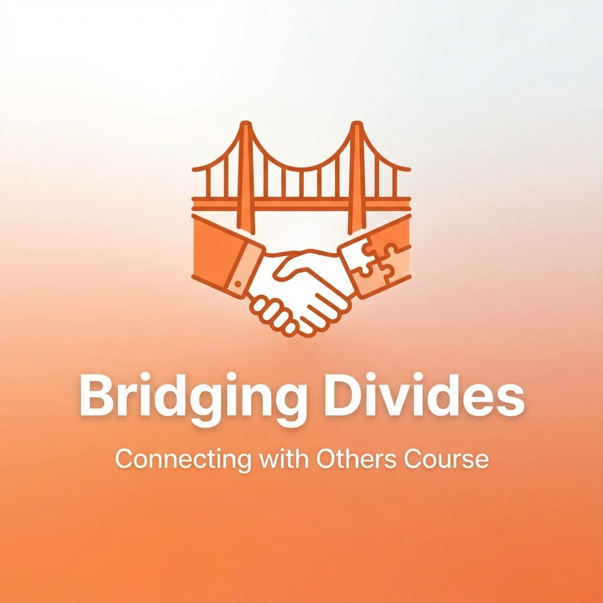

EU Rights Check: Passive
Bridge Builder
User Name
Passionate about digital rights and constructive dialogue.
85
Civic Score
18m
Avg. Session
142
Contributions
Recent Activity
Settings
Algorithm Tuning
Customize how the Civic Grid algorithm curates your feed.
Prioritize bridge-building content over engagement.
How quickly the app detects doomscrolling.
Automatically block potential rights violations.
Data & Privacy
Manage how your data is used and stored.
Help improve the Civic Grid algorithm.
Simulation Controls
Civic Education Hub
Master the skills of constructive citizenship.
Human Rights 101
5 min • BasicsHow to Discuss
8 min • Communication
